Online instructions: http://davare.github.io/crane/
Part 1: Build the Square Box
Step 1: Place color side of the paper down. Fold on a diagonal (dotted line) to get a triangle
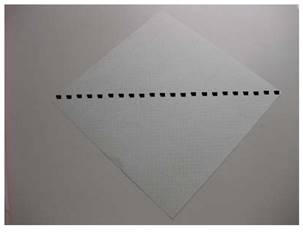
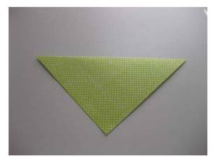
Step 2: Fold down the center of the triangle (dotted line) to form a smaller triangle
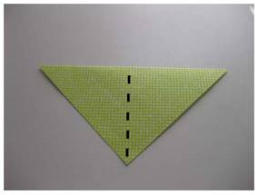
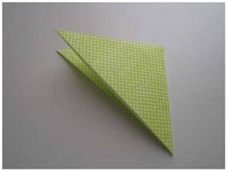
Step 3. Undo the last fold, leaving a nice crease down the middle of your triangle. Hold down the left edge of the triangle and use your other hand to “open” the flap on the right side of the triangle. You should see something similar to the shape below.
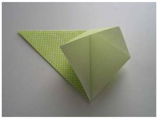
Step 4. Squash the flap down to form a mini square. Use the top of the flap as the point you squash down.
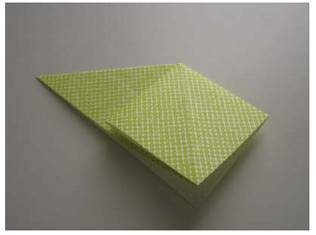
Step 5. Flip over the paper such that the point of the triangle is now on your right
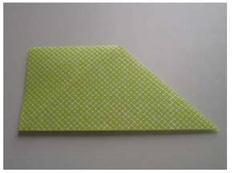
Step 6. Hold the top left corn down and lift up the bottom right tip. This will reveal another square shape under the tip. Hold the bottom right corner of this newly revealed square. Squash down the flap over the square to make a square. (i.e. squash the bottom right point over to the bottom left)
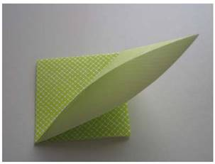
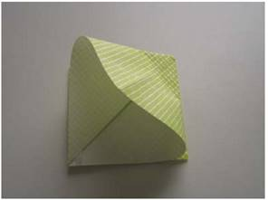
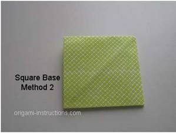
Congrats! You completed the square base!!
Part 2: Turn that Box into a Diamond
Step 7. Fold the corners of your square base in. It’s very important that you crease this very well.
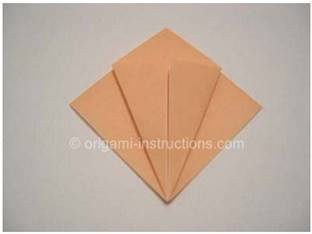
Step 8. Take the top corner and fold it down over the flaps you just made. The figure will look like a cape or a cobra head.
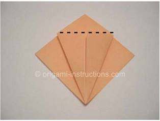
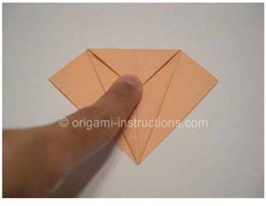
Step 9. Undo the last 2 fold to get back to your original square base (but with strong creases showing)
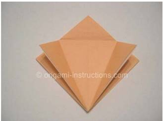
Step 10. Lift up the bottom corner (will look like an open mouth)
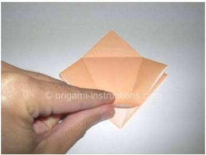
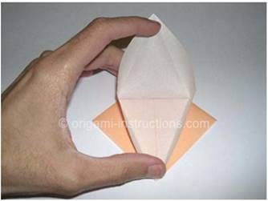
Step 11. Fold in the sides to make a diamond. This should fold easily. Start with the bottom of the diamond fold first as this will help form the shape easily
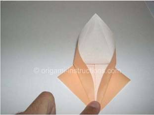
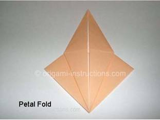
Step 12. Oooohhh! You’re half way there! Whoa oh! Flippin’ it over
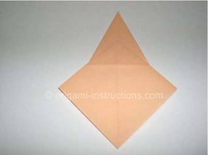
Step 13. Repeat steps 7 – 12
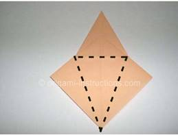
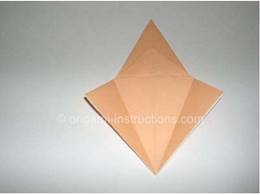
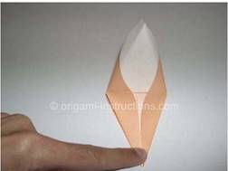
Step 14. Shine bright like a diamond!! You’ve completed part 2. You now have a bird base
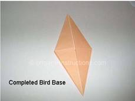
Part 3. Have the Crane emerge from the Diamond
Step 15. Fold back the sides of the diamonds. Try to start the fold about 3/4th up
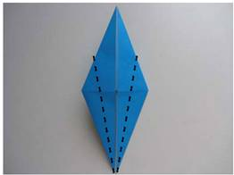
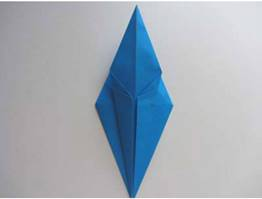
Step 16. Flip over the paper
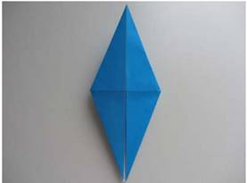
Step 17. Repeat folding to the middle again
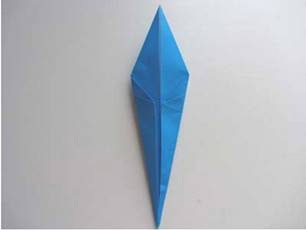
Step 18. The dreaded inside reverse fold…Create a leg for your diamond by folding the bottom right of the diamond back…kind of like a person lifting their leg up. CREASE well
Step 19. Undo this last fold so you have a diamond again
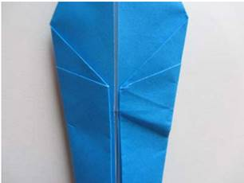
Step 20. Push your thumb between the two layers of paper you just creased to pull out the crane’s neck. The diagram below is more helpful than this text….or ask for help…or pretend you totally got it while you copy your neighbor
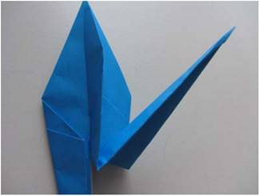
Step 21. To the left! To the left! Everyone explain how to do this to the left!
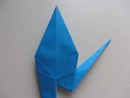
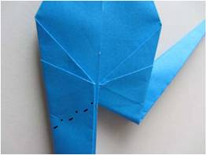
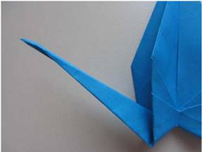
Step 22. Yes! It’s a frog!! Wait…what?
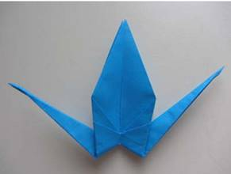
Step 23. Oh! Those are WINGS!! Let’s give it a head first though. Bend one side off in your fav direction
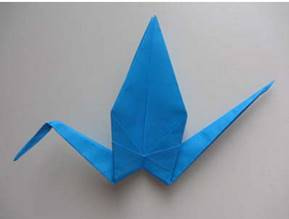
Step 24. You thought I was joking when I told you to crease well didn’t you? Fold down the wings without much force and we’ll see who listens the best
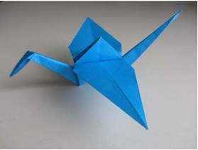
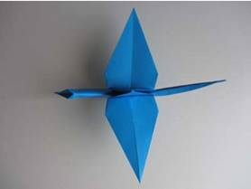
Step 25. Hold the tips of the wings and pull apart slowly until the middle triangular part expands.
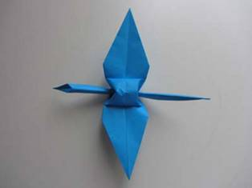
Step 26. Squash the middle part down a bit and Bam! Origami Crane!
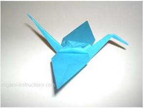
You made it!! You’re the best, around! Nothing’s gonna ever keep your crane down!